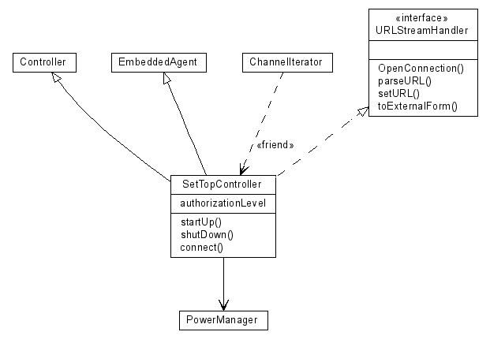

Last change: Thursday, November 24, 2005 1:21 am
Last change: Thursday, November 24, 2005 1:21 am
Unless otherwise expressly stated, all original material on this page created by Diomidis Spinellis is licensed under a Creative Commons Attribution-Noncommercial-No Derivative Works 2.5 License.
/*
* Advanced relationships
* UML User Guide p. 137
*/
/**
* @opt attributes
* @opt operations
* @hidden
*/
class UMLOptions {}
class Controller {}
class EmbeddedAgent {}
class PowerManager {}
/**
* @extends Controller
* @extends EmbeddedAgent
* @navassoc - - - PowerManager
*/
class SetTopController implements URLStreamHandler {
int authorizationLevel;
void startUp() {}
void shutDown() {}
void connect() {}
}
/** @depend - <friend> - SetTopController */
class ChannelIterator {}
interface URLStreamHandler {
void OpenConnection();
void parseURL();
void setURL();
void toExternalForm();
}
|  |
| Contents | « Previous Next (Class Diagram Example: Relationships Inference) » |
Last change: Thursday, November 24, 2005 1:21 am
Unless otherwise expressly stated, all original material on this page
created by Diomidis Spinellis is licensed under a
Creative Commons Attribution-Noncommercial-No Derivative Works 2.5 License.